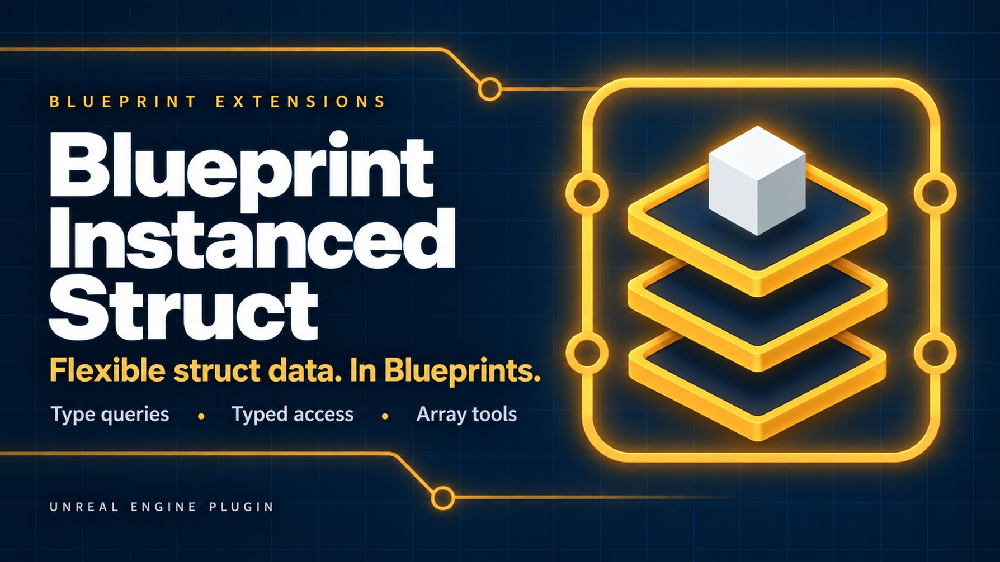

An Instanced Struct is one variable that can hold a value of any struct type chosen at runtime. It is useful wherever entries share a role but not one fixed payload: events, inventory items, configuration records, save data and messages between systems.
Unreal Engine supplies FInstancedStruct and a small Blueprint surface. Blueprint Instanced Struct adds the tools needed to inspect the held type, choose wildcard pin types before connecting them, query arrays and make a reliable text round trip. It uses the engine's existing container rather than introducing a new one.
Enable Blueprint Instanced Struct in Edit > Plugins and restart the editor when requested.
Create a variable whose type is Instanced Struct. To put a value into it, use Make Instanced Struct or Set Struct Value. To read it, place Get Struct Value, choose a struct in the picker shown on the node and connect the Instanced Struct value. The success and failure execution outputs make a wrong or empty type explicit.
All functions appear under the Instanced Struct category. The plugin has no project settings, runtime service or actor to place.
An Instanced Struct is either empty or contains one complete struct value together with its type. Assigning a different type replaces the previous value. Use Is Valid to distinguish an empty container and Get Script Struct to retrieve the current type.
Make and Set copy a struct into the container. Get copies it out. Editing the copied output later does not silently modify the container; call Set Struct Value again with the changed struct.
For C++ struct hierarchies, Is Struct Type accepts a derived value when asked about a base type, and Get Struct Value can copy out the base portion. Blueprint-authored Structure assets cannot inherit from each other, so comparisons between them are exact type matches.
Connect any single struct value to Make Instanced Struct. Its wildcard input adopts the connected type and the result contains a copy of that value.
Use Make Default Of Type when the struct type is known only at runtime and there is no value to copy. The result contains a default-initialized instance of the selected type. The node is pure, so it can be used directly while constructing an array.
Passing no valid Struct Type produces an empty value.
The plugin's Get Struct Value and Set Struct Value nodes show a struct type picker in the node body. Selecting a type immediately changes the wildcard pin, which means you can split it or drag from it before any other pin is connected.
The picker only lists struct types that Blueprint variables can hold. When a typed pin is connected, that connection determines the wildcard type and takes precedence over the picker.
Get copies the value into the typed output and routes execution through success when the container holds a compatible type. An empty value or incompatible type routes through failure instead of returning partially interpreted memory.
Set replaces the held value with a copy of the connected struct. The input must be one struct, not an array. Arrays of Instanced Struct containers are handled by the dedicated query nodes.
To String is for people reading a log. It is not the persistent round-trip representation.
Export To String writes the held type and its member values into text that Parse From String can reconstruct. Use this pair for configuration, save data, a clipboard workflow or another text channel under your control.
Parse From String reports failure when the text is invalid or its type cannot be resolved. Treat serialized text as versioned data: renaming a struct or changing its members can require migration in the same way as any other saved Unreal data.
The array nodes take an array of Instanced Struct values and a Struct Type:
| Node | Result |
|---|---|
| Find First Of Type | The first matching value and its index, or -1 when absent. |
| Filter By Type | Every matching value in the original order. |
| Contains Type | Whether at least one matching value exists. |
| Count Of Type | The number of matching entries. |
| Remove All Of Type | Removes matches in place and returns how many were removed. |
Matches follow the same native inheritance rule as Is Struct Type. Use Contains Type instead of Filter By Type when only a yes-or-no answer is needed.
Define one struct per event payload and store Instanced Struct values in an array. A dispatcher can use Is Struct Type to select a handler, then Get Struct Value as that handler's expected type. Use a native base struct only when inherited payload matching is required.
Keep common identity fields in the inventory entry and its specialized data in an Instanced Struct. Weapon, potion and quest-item structs can coexist in the same array without a large union struct full of unused members.
Export To String, store or transmit the result, then Parse From String into a new Instanced Struct. Branch on the Parse result before using the value, then inspect its type or retrieve it with Get Struct Value.
Store a Struct Type in data, pass it to Make Default Of Type and then route the resulting value by type. This is useful when authoring chooses the type but runtime code constructs the payload.
The container is empty or the selected output type is incompatible with the held type. Print the value with To String or inspect Get Script Struct. For Blueprint-authored structs, the selected type must match exactly.
Check both the node picker and connected pins. A typed connection always wins. Disconnect it before choosing a different type in the picker.
That is intentional. Get, Set and Make accept one struct value. Use an array of Instanced Struct containers and the array query nodes instead of treating an array as one struct's memory.
The exported form includes the struct type. Add the appropriate Unreal redirect or migrate the saved text when a type moves or changes name.
The engine also offers several basic Instanced Struct operations. This plugin keeps its own consistent Make, Get, Set, validity, reset and comparison surface under one category alongside the additional nodes.
Questions and bug reports: tomasz.klin@gmail.com.
Include the engine version and the plugin version - this manual documents 1.0.0 - plus the held struct type and a screenshot of the relevant graph when possible.